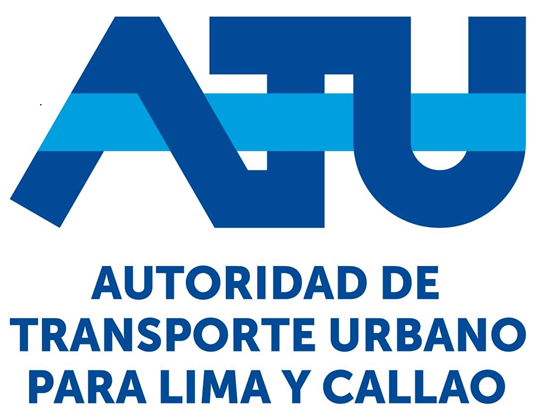
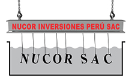

+20 años de experiencia optimizando centros de datos y asegurando la continuidad operativa de grandes empresas.
Años de Experiencia
Soporte Nivel 3 Avanzado
Centros de Datos Optimizados
Ingeniero de Sistemas / CIP 353091, especializado en la administración avanzada de servidores físicos y virtuales, ciberseguridad, gestión de servicios tecnológicos y continuidad operativa. Con una sólida trayectoria corporativa e independiente liderando proyectos tecnológicos críticos.
Soluciones de infraestructura TI de nivel empresarial, diseñadas para garantizar continuidad operativa y seguridad total.
Migración, consolidación y continuidad operativa de centros de datos de alta disponibilidad.
Cableado estructurado, redes complejas y firewalls de nivel empresarial.
Fortinet, Barracuda, VPNs y políticas de seguridad perimetral avanzadas.
Sistemas avanzados de backup con VMware, Acronis y Veritas.
Stack tecnológico de nivel empresarial dominado a profundidad para proteger y optimizar infraestructura crítica.
Conversemos sobre cómo puedo ayudar a tu organización a alcanzar máxima disponibilidad, seguridad y continuidad operativa.
Empresas e instituciones que confían en nuestra experiencia y soporte tecnológico.

